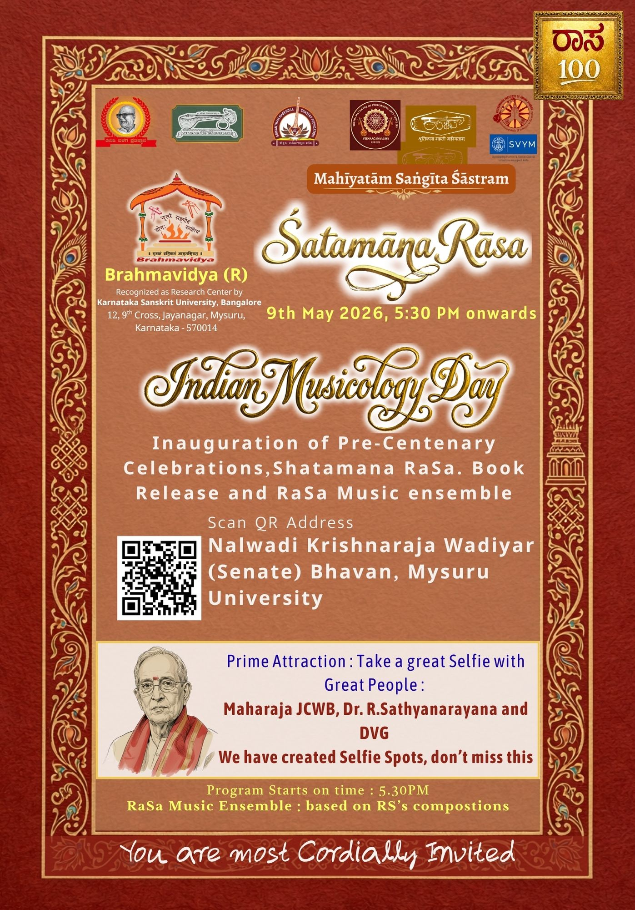
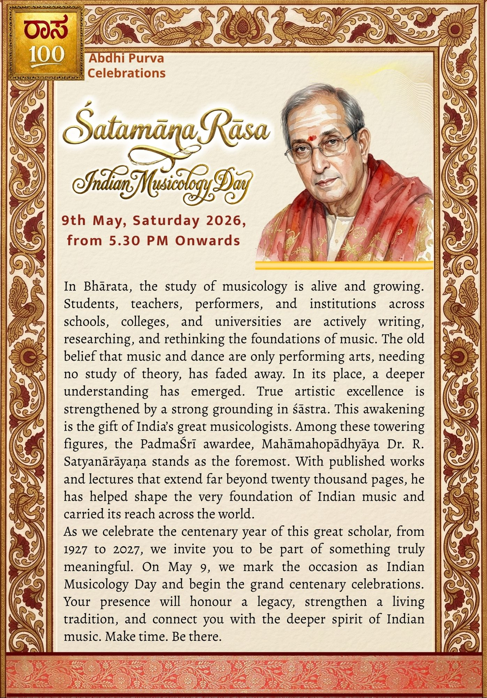
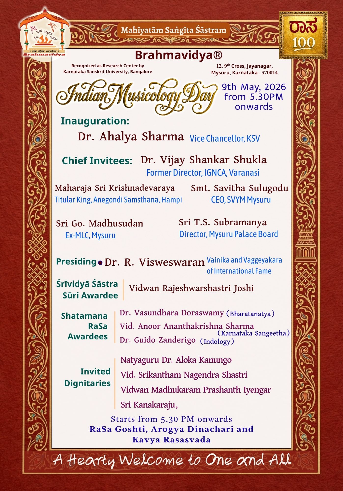
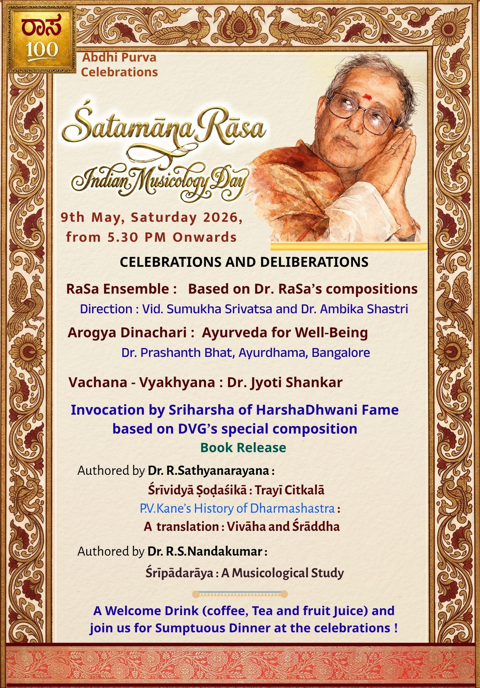

kāryakramaḥ
Centenary Programme
A year-long celebration of music, scholarship and the guru-śiṣya tradition
gurur dēvō mahēśvaraḥ
guruḥ sākṣāt paraṃ brahma
tasmai śrī guravē namaḥ Guru Stōtram
Ābdhipūrva Utsava Has Begun
The pre-centenary celebrations marking the lead-up to the birth centenary of Padma Śrī Mahāmahōpādhyāya Dr. R. Sathyanarayana have commenced.
List of Programs
Programme Invitations




Details of concerts, lectures, seminars, publication releases and commemorative gatherings will be announced shortly.
Participation and Venue
All events are open to scholars, students, musicians and members of the public. Venues will be announced closer to each event. The principal celebrations in May 2027 will be held in Mysuru, the city where Dr. Sathyanarayana lived and worked for most of his life.
For details, registration and updates, please visit the Contact page or write to Brahmavidya (R.).